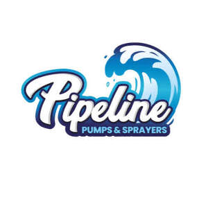

Trade Mark Journal No.2025/032 8 August 2025
UK00004239461 25 July 2025 (7,8,17,20,21)

- Class 7
- Pump impellers; Pump diaphragms; Pump shafts; Pumps; Sump pumps; Pump control valves; Pump installations; Pump starters; Vacuum pump installations; Vacuum pumps; Suction pumps; Macerator pumps; Water pumps; Pressure pumps; Screw pumps; Submersible pumps; Feed pumps; Centrifugal pumps; Air pumps; Aerating pumps; Electric pumps; Circulating pumps; Electric water pumps; Submersible electric pumps; Electrical pumps; Aquarium pumps; Water supply machines [pumps]; Water pumps for use in aquariums; Pumps [machines]; Electrical pumps for ponds; Water pumps for use in terrariums; Aeration pumps for ponds; Water pumps for water filtering units; Water pumps for aerating ponds; Sprayers [machines] for garden use in spraying insecticide; Sprayers [machines] for household use in spraying insecticide; Sprayers [machines] for agricultural use in spraying herbicide; Sprayers [machines] for agricultural use in spraying fungicide; Sprayers [machines] for garden use in spraying weedkillers; Sprayers [machines] for household use in spraying weedkillers; Power-operated sprayers for insecticides; Sprayers [machines] for agricultural use in spraying insecticides; Insecticide sprayers [machines]; Sprayers (insecticide -) [machines]; Power-operated sprayers; Sprayers (insecticide -) [hand-held tools, electric]; Spray lances being agricultural implements; Crop spraying machines; Sprayers for use in horticulture [parts of machines].
- Class 8
- Sprayers [hand-operated tool] for garden use in spraying insecticide; Hand-operated insecticide sprayers; Hand-operated sprayers for insecticide; Insecticide sprayers, hand-operated; Sprayers [hand-operated tool] for household use in spraying insecticide; Sprayers [hand-operated tool] for garden use in spraying weedkillers; Sprayers [hand-operated tool] for household use in spraying weedkillers; Sprayers [hand-operated tool] for agricultural use in spraying insecticides; Hand-pumped sprayers; Sprayers (Insecticide -) [hand tools]; Insecticide sprayers [hand tools]; Sprayers [hand-operated] for use in horticulture; Sprayers [hand-operated] for use in agriculture; Sprayers for use in horticulture [hand tool]; Sprayers for use in agriculture [hand tool]; Agricultural sprayers [hand operated]; Hand-operated sprayers for agricultural purposes; Atomizers (Hand-operated -) for insecticides; Hand-operated sprayers for industrial or commercial use; Atomizers (Insecticide -) [hand tools]; Insecticide atomizers [hand tools]; Sprayers (knapsack -) [non-electric] for carrying on the back; Sprays [hand-operated tools].
- Class 17
- Water hoses for irrigation; Water hoses of plastic; Water hoses of rubber; Flexible pipes; Flexible hoses (Non-metallic -); Non-metallic flexible hose pipes; Flexible hose pipes of plastic; Non-metallic flexible pipes; Flexible hoses for conveying liquids; Flexible hoses, not of metal; Non-metallic flexible hoses of textile; Non-metallic flexible hoses made of rubber; Flexible tubes of plastic; Flexible hoses composed of rubber; Flexible hoses composed of plastics; Fittings [non-metallic] for flexible pipes; Flexible pipes, not of metal; Flexible tubes (Non-metallic -) for the conducting of liquid media; Flexible hoses made of polymeric materials; Water hoses of textile; Flexible pipes of silicone rubber reinforced with fabric; Flexible hoses of silicone rubber reinforced with fabric; Couplings (Non-metallic -) for flexible pipes; Pipe connections (non-metallic -) [parts of rigid water pipes]; Non-metallic flexible hoses made of synthetic rubber; Fittings, not of metal, for flexible pipes; Flexible hose of plastics with wire braiding; Flexible tubes, not of metal; Tubes (Flexible -), not of metal; Pipe extensions (non-metallic -) [parts of rigid water pipes]; Water hoses for garden use; Flexible hose of plastics with wire inserts; Water hoses for household use.
- Class 20
- Plastic water tanks; Water tanks (Non-metallic -) [containers]; Water storage tanks (Non-metallic -) [containers]; Water tanks of plastic for household purposes; Water tanks of plastic for agricultural purposes; Water storage tanks, not of metal or masonry.
- Class 21
- Sprayer nozzles for garden hoses; Garden hose sprayers; Garden hose spray nozzles; Sprayer wands for garden hoses; Sprayers for attachment to garden hoses; Spray nozzles for garden hoses; Plastic spray nozzles; Sprayers attached to garden hoses; Nozzles for sprinkler hose; Hose nozzles; Nozzles for watering hose; Nozzles for sprinkler hoses; Nozzles for watering hoses; Empty spray bottles; Nozzles for hoses.
CREATION WHOLESALE LIMITED